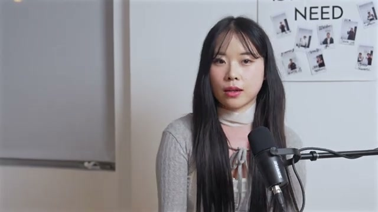
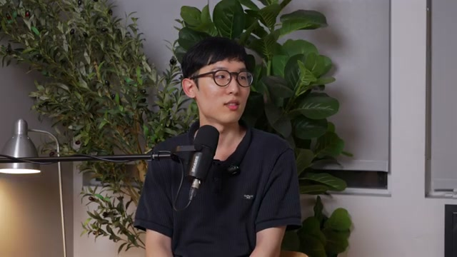
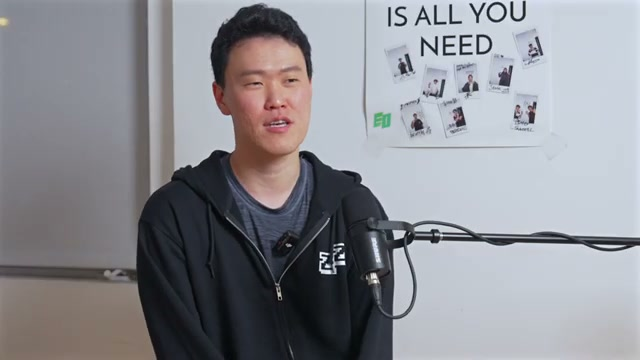
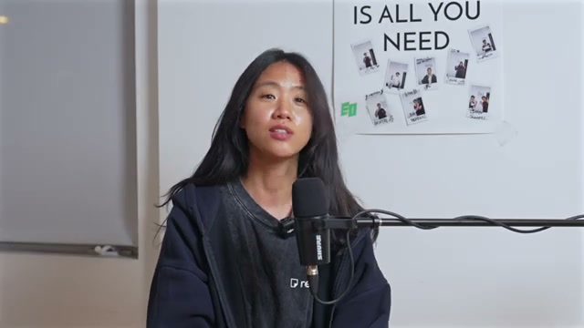
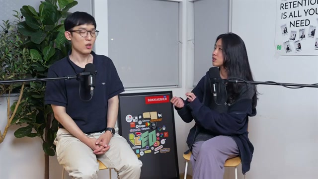
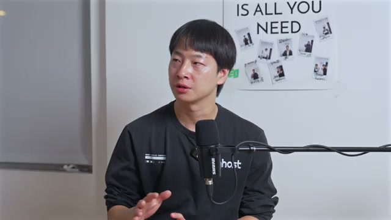
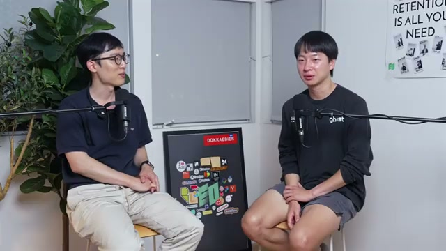

쉬워진 제작, 여전히 어려운 증명
EO 하우스는 창업자들이 함께 머무는 공동주거 공간이다. 이 영상에서 진행자는 스타트업 크리에이터, 해커톤 우승 개발자, 스타트업 미디어 출신 기자, EO 대표를 차례로 만난다. 대화는 외주 개발 실패에서 AI 에이전트의 사용성, 언론의 사업 모델, 실리콘밸리의 네트워크로 이어진다.
이 보고서의 중심 해석은 이렇다. AI로 결과물을 만드는 문턱이 낮아질수록, 반복 사용을 만드는 경험과 직접 얻은 정보, 독립적인 판단, 오래 쌓은 관계의 중요성이 드러난다. 이는 네 출연자가 공동으로 제시한 결론이 아니라, 서로 다른 대화를 연결한 분석이다.
근거 범위 · 제공된 노트에 기록된 한국어 자동 생성 자막 약 2만 4천 자, 영상 메타데이터·설명란·25개 챕터, 검토를 거쳐 선정한 10개 프레임을 바탕으로 재구성했다. 인용은 자막을 문맥에 맞게 다듬은 표현이다. 인물·제품명의 일부 철자와 영상 속 사건·수치는 외부 검증되지 않았다.
출시보다 반복 사용
유입은 제품의 가능성을 보여준다. 사용자가 다시 돌아오는 이유는 별도로 만들어야 한다.
기능보다 사용 맥락
에이전트가 할 수 있는 일과 사용자가 무엇을 맡길지 아는 것은 서로 다른 문제다.
정보보다 오리지널 취재
기자의 관점에서는 정보 전달을 넘어, 직접 취재하고 아직 언어화되지 않은 문제를 설명하는 일이 중요해진다.
접촉보다 관계의 축적
현장의 밀도는 기회를 만든다. 신뢰로 이어지려면 기여와 후속 행동이 필요하다.
만들 수 있다는 것과
사업이 된다는 것 사이
첫 번째 게스트는 인스타그램에서 스타트업 콘텐츠를 만드는 크리에이터다. 자동 자막에서는 “예부부”, 본명은 “예진”으로 표기된다. 외국인의 정착을 돕는 사업에서 단기임대 플랫폼으로 확장하려던 중, 외주 개발 사기로 약 1천만 원을 잃었다고 말한다. 그 경험을 쓰레드에 올린 글이 퍼지면서 콘텐츠 활동이 시작됐다.

게스트가 돌아본 징후는 구체적이다. 피그마 시안 대신 PPT만 전달받았고, 중간 확인 요청에는 마지막에 보여준다는 답이 돌아왔다. UI가 겹치는 문제에는 “유선 와이파이”로 연결해야 한다는 설명을 들었다. 계약금·중도금·잔금을 단계별로 나누지 않은 점도 자신의 실수로 정리한다. 출시 전에 결과물을 확인할 구조가 없었다는 것이 이 경험에서 읽히는 교훈이다.
단기임대 사업 설명에서도 비슷한 간극이 나타난다. 게스트는 AI로 매물이 많은 지역을 찾고 부동산 정보를 조회하는 접근을 소개한다. 그러나 공급의 병목으로 지목한 것은 검색 능력이 아니라 전대에 동의하는 집주인의 부족이다. “매물 수가 곧 수요”라는 접근 역시 대화에서 제안된 가설이지 검증된 시장 지표는 아니다.

단기임대·전대에 관한 설명은 게스트의 발언을 요약한 것이다. 실제 사업의 적법성이나 필요한 허가를 판단하는 근거로 제시하지 않는다.
해커톤 우승자가 강조한 것은 출시 이후였다
두 번째 게스트는 펌웨어·백엔드와 AI 스타트업 리드 경험을 가진 8년차 개발자다. 국내 “흑백 개발자” 해커톤에서 우승했지만, 전날 참가한 스탠퍼드 Future of Work 해커톤에서는 예선 탈락했다고 한다. 우승 비결로 내놓은 답은 빠른 문제 해결, 심사 의도 파악, 시간에 맞는 범위 설정이다.

국내 대회는 실제 매출로 경쟁하는 방식이었다고 한다. 그래서 그의 문제의식은 “바이브 코딩으로 동작하는 시제품을 만들었다”는 순간에서 멈추지 않는다. 유저의 문제를 계속 풀고 개선하는 사이클이 제품의 본체라는 것이다. 첫 게스트가 제작 과정의 확인을 놓쳤다면, 두 번째 게스트는 제작 이후의 검증을 강조한다.
빈 채팅창은 사용 이유가 되지 않는다
개발자는 비개발자에게 어려운 오픈소스 에이전트 설치·설정을 쉽게 만드는 데서 출발했다. 24시간 백그라운드에서 사용자의 일을 돕는 퍼스널 AI 에이전트를 약 17일 만에 만들어 판매했다. 하지만 빠른 출시와 좋은 유입은 지속 사용으로 이어지지 않았다.
“유입은 됐는데
리텐션이 안 나온다.”
그가 지목한 이유는 새로움 자체다. 사용자는 채팅창을 열고도 무엇을 시켜야 할지 모른다. “24시간 작동한다”는 기능 설명이 생활 속 필요로 번역되지 않은 셈이다. 진행자는 어린 시절 컴퓨터를 컴퓨터여서 쓴 것이 아니라 게임기여서 썼다는 비유로, 구체적인 사용 목적의 중요성을 짚는다.
대화에서 나온 세 가지 설계 방향
사용자가 요청을 만들기 전에 상황에 맞는 도움을 제시한다. 부정확한 추천은 오히려 경험을 해칠 수 있다.
홍보와 온보딩에서 실제 작업을 보여준다. 무엇을 맡기면 되는지 사용자가 바로 알 수 있어야 한다.
반복 사용으로 사용자의 상황을 더 잘 이해한다. 나를 아는 정도가 경쟁력이라는 것이 게스트의 관점이다.
대화에서 제시된 아이디어를 사용 경험의 흐름으로 재배열했다. 효과가 검증된 인과 모형은 아니다.
게스트는 장기적으로 사용자가 에이전트에 익숙해지면 프로액티브성의 중요도가 낮아질 수도 있다고 덧붙인다. 따라서 먼저 제안하는 기능을 보편적인 정답으로 읽기보다, 현재 사용자의 낯섦을 줄이기 위한 가설로 보는 편이 정확하다.
UX는 화면의 미감보다 넓다
진행자는 자주 하는 일의 단계를 한두 번 줄여주는 특화 제품에도 사용 이유가 있다고 본다. 게스트는 기술 자체가 해자가 아니라, 좋은 사용자 경험을 만들기 위해 기술이 필요할 수 있다고 정리한다.
질문은 “무엇을 할 수 있는가?”에서 “사용자가 얼마나 쉽게 원하는 결과에 도달하는가?”로 이동한다.
범용과 특화 에이전트에 대한 전망도 이 관점에서 나온다. 게스트는 향후 2~3년 동안 범용 퍼스널 에이전트가 기반이 되고, 그 위에 특정 필요를 더 잘 해결하는 특화 UX가 등장할 것으로 본다. 로컬 설치형과 클라우드형의 본질적 차이가 크지 않다는 진행자의 견해도 나온다. 둘 다 인터뷰 속 판단이며, 검증된 기술 비교나 시장 예측으로 단정할 수는 없다.
정보가 넘칠 때,
직접 알아낸 것이 남는다
세 번째 게스트는 아웃스탠딩 기자와 채널톡 인하우스 마케터·에디터를 거쳐, EO 영문 웹 매거진의 롱폼 콘텐츠를 위해 샌프란시스코에 머무는 기자다. 자동 자막에서 이름이 여러 형태로 나타나 이 보고서에서는 확정하지 않았다.

진행자가 조회수 같은 지표로 좋은 콘텐츠를 판단해 왔다면, 기자는 읽는 과정에서 생기는 생각과 반응에도 가치를 둔다. 진행자는 이를 “아웃풋 토큰 말고 리즈닝 토큰이 중요하다”는 비유로 옮긴다. 특정 집단의 반감이 다른 집단의 호응과 함께 나타날 수 있다는 관점도 제시된다.
AI가 언론에 미치는 영향을 묻자 기자는 위협적이며 “업보”라고 답한다. 정보 소비 방식과 기술 변화를 따라가지 못했고, 취재에 집중된 조직에서 사업 모델을 고민하는 역할이 부족했다는 비판이다. 그의 진단에서 보도자료 수준의 스트레이트 기사는 공공재에 가까워졌고, 오리지널 취재와 기획의 중요성이 커진다.
“세상에 의미가 있는데,
아직 언어화되지 않은 것을 쓰고 싶다.”
사례로 든 것은 투자받은 스타트업이 폐업할 때 투자금과 이해관계가 어떻게 얽히는지 다룬 기사다. 폐업 창업자와 VC 사례를 모은 “망하고 싶어도 망하지 못하는 스타트업, 동의하고 싶어도 동의하지 못하는 VC”가 큰 반응을 얻었다고 한다. 이미 알려진 정보를 재배열하는 대신, 당사자에게 접근해 잘 설명되지 않은 문제를 드러내는 작업이다.
언론사의 이름값은 사라질까, 취재를 가능하게 할까
진행자는 이름값의 영향력이 약해지면 큰 언론사가 더 위험할 수 있다고 본다. 기자는 반대로 섭외력과 인재 유입이 그 이름값에서 나오며, 그것이 기획 취재를 가능하게 한다고 말한다. 두 사람의 차이는 브랜드를 독자의 선택 기준으로 보는지, 취재를 수행하는 자원으로 보는지에 있다.

취재 관점과 개발자 관점이 만나는 지점
이어지는 대화에서는 출연자가 언급한 “AMD의 월드랩스 인수”를 놓고 전략 해석을 비교한다. 이 사건의 사실 여부는 제공된 노트에서 외부 검증되지 않았다. 아래 표는 인수 사실을 전제한 보도가 아니라, 인터뷰에서 드러난 두 관점의 기록이다.
| 논점 | 기자의 설명 | 진행자의 설명 |
|---|---|---|
| 전략 동기 | 칩 기업은 몇 년 앞의 로드맵을 위해 프런티어 연구자의 시각을 내부에 둘 필요가 있다. | 특정 회사만을 목표로 했다기보다 여러 후보 중 협상이 성사된 선택일 수 있다. |
| 기술 평가 | 취재에서 들은 의견은 비싸지만 논리가 있다는 쪽이었다. | 결과물은 독특하지만 기술적 주류는 아니라는 견해를 제시한다. |
| 조직과 시너지 | 역할이 겹치는 연구팀의 경쟁 비용을 줄이기 위해 리더의 자율성이 중요하다는 설명. | 스케일업 파트너를 확보하는 측면에서 양쪽에 시너지가 있을 수 있다. |
| 평가의 태도 | 취재한 업계 의견을 통해 거래의 논리를 설명한다. | 정답인지는 몰라도 탐색할 가치가 있는 시도라고 본다. |
여기서 얻을 수 있는 분석상의 질문은 사건의 진위와 별개다. 기술 기업의 선택을 읽을 때 결과물의 성능뿐 아니라 미래 워크로드, 조직 운영, 파트너십의 필요까지 살펴볼 수 있다는 것이다.
같은 정보를 읽어도,
같은 환경에서 일하는 것은 아니다
한국이 실리콘밸리보다 6개월~1년 뒤처져 있다는 통념에 대해 개발자는 동의하지 않는다. 공개된 기술 블로그는 어디서나 동시에 읽을 수 있고, 개인은 충분히 프런티어에 설 수 있다는 것이다. 그가 샌프란시스코에서 발견한 차이는 카페에서도 빌더와 파운더를 만나는 밀도였다.
진행자는 다른 경험을 말한다. 한국에서는 접근하지 못했던 일부 모델과 도구를 현장에서 접했으며, 특수한 목적에서는 접근권의 차이가 생긴다고 본다. 두 관점은 한쪽을 지우기보다 구분해서 읽어야 한다.
| 차원의 구분 | 대화에서 드러난 관점 | 실무 질문 |
|---|---|---|
| 공개 정보 | 개발자는 같은 자료를 동시에 읽을 수 있다고 본다. | 학습 지연을 지역 차이로 설명하고 있지는 않은가? |
| 접근권 | 진행자는 일부 모델·도구의 접근 차이를 경험했다고 한다. | 현장 방문으로만 얻을 수 있는 자원은 무엇인가? |
| 사람의 밀도 | 빌더·창업자를 일상적으로 만나는 환경의 장점이 반복해서 언급된다. | 우연한 접촉을 실제 협업으로 이어갈 준비가 되어 있는가? |

네 번째 게스트인 EO 대표 김태용은 그 밀도를 “우버를 다섯 번 타면 한 번은 기사가 창업자”라는 표현으로 설명한다. 이는 출연자의 경험적 묘사이며 통계가 아니다. 그는 이민자가 많은 도시의 공감대, 날씨, 창업자와 빌더의 일상적 접촉을 장점으로 꼽는다.
김 대표의 설명에 따르면, EO 하우스는 비싼 렌트를 나누는 동시에 특정 조직에 속하지 않은 창업자에게 소속감과 이너서클을 제공하려는 공간이다. 제작진이 창업자와 먹고 자며 지내면 콘텐츠도 좋아진다는 판단이 함께 있었다. 공동주거가 네트워크와 취재의 기반으로 기능하는 셈이다.
그는 실리콘밸리의 중심이 남쪽 대학·기술 지역에서 모바일 기업과 AI 기업이 자리한 SF 도심으로 이동한 흐름을 설명하고, YC의 이전도 강조한다. 다만 영상에서 언급한 투자 규모와 역사적 수치는 이 보고서에서 교차 확인하지 않았다.

로컬이 묻는 것은 “얼마나 오래 남을 사람인가”
김 대표는 전 세계에서 온 사람들 중 상당수가 1~2년 안에 돌아가며, 도움을 준 뒤 연락이 끊기는 경우가 많다고 말한다. “100명을 도우면 95명 이상이 연락이 끊긴다”는 표현도 개인적 경험의 진술이다. 그가 강조하는 것은 방문자의 열정 표현보다 기여와 팔로업이다.
인맥 없이 방문하는 사람에게는 영어와 자기소개를 준비하고, 2~3주 이상 머물며 Luma 밋업에 참여하라고 권한다. 호스트나 스피커에게 질문하고, 자신이 무엇을 줄 수 있는지 생각하라는 조언이 이어진다. 진행자의 사례에서는 제품을 실제로 써본 뒤 구체적인 설계 질문을 건넨 일이 대화의 출발점이 됐다.
“나는 무엇을 줄 수 있는가.”
창업 조언 역시 자기 생각으로 수렴한다. 미국에서 나온 제품의 한국 버전을 따라 만드는 방식보다 뾰족한 관점이 필요하며, 돈을 넘어서는 미션이 인재와 고객을 움직인다는 것이 김 대표의 주장이다. 현장을 직접 보라는 권유는 그 판단을 대신해 주는 답이 아니라 판단을 만들기 위한 경험으로 읽힌다.
데모 다음을 설계하는 사람에게
네 인터뷰는 서로 다른 분야를 다루지만, 결과물을 만든 뒤 무엇을 확인해야 하는지에 대한 질문을 남긴다. 아래 항목은 출연자의 발언을 토대로 정리한 실무 점검표다. 영상에서 효과가 검증된 처방은 아니다.
- 제품: 첫 방문자가 설명 없이도 맡길 일을 떠올릴 수 있는가? 첫 사용 이후 다시 돌아올 구체적인 이유가 있는가?
- 에이전트 UX: 더 많은 기능을 추가하기 전에, 자주 하는 작업의 단계와 설정 부담을 줄일 수 있는가?
- 콘텐츠: 직접 취재한 사실, 독립적인 해석, 아직 설명되지 않은 문제 중 무엇이 이 글의 고유한 가치인가?
- 현장 방문: 온라인으로 얻기 어려운 사람·자원·피드백 중 무엇을 만나려 하는가?
- 관계: 도움을 받은 뒤 어떤 행동으로 결과를 알리고, 상대에게 어떤 가치를 돌려줄 것인가?
- 전략: 경쟁사의 출시 소식을 제외해도, 이 제품을 만들어야 하는 자신의 이유가 남는가?
피지컬 AI에도 적용할 수 있는 질문
필드로봇과 피지컬 AI에서도 데모 성공과 현장 반복 사용은 구분할 필요가 있다. 이 보고서의 해석을 확장하면, 로봇이 한 번 과업을 수행하는지뿐 아니라 설치·운영·예외 대응까지 포함한 경험이 반복 사용을 만드는지 물을 수 있다. 인터뷰에서 해당 분야를 실증한 것은 아니므로, 이는 적용 가능한 연구 질문이다.
만든 다음, 무엇이 남는가
더 빨리 만들 수 있을 때 필요한 것은 더 많은 결과물만은 아니다. 사용자가 다시 찾는 이유, 직접 알아낸 사실, 스스로 세운 관점, 시간이 지나도 이어지는 관계를 확인해야 한다.
다음 제품이나 콘텐츠를 공개하기 전에 한 가지를 물어보자. 처음의 호기심이 사라진 뒤에도, 누군가 이것을 다시 찾을 이유가 있는가?
무엇을 근거로, 어디까지 읽었나
- 원 영상: 샌프란시스코에서 도전하는 사람들 @EO하우스 — sudoremove, 2026년 10월 13일 게시. 영문 제목은 People Challenging Themselves in San Francisco @EO House. 영상 길이는 4,443초다. 메타데이터는 제공된 노트를 따른다.
- 텍스트 근거: 한국어 자동 생성 자막 약 2만 4천 자와 메타데이터·설명란·25개 챕터. 수동 자막은 없으며, 인용문은 자동 자막을 문맥에 맞게 다듬었다. 단어 단위의 정확한 전사로 볼 수 없다.
- 고유명사: 기자 이름과 개발자 이름, 일부 제품명이 불안정하게 인식됐다. “뮤즈”, “인스트”, “다츠”, “오픈클러”, “헤르메스” 등의 표기를 공식 명칭으로 확정하지 않았다. 관련 회사나 인물을 추정만으로 연결하지 않았다.
- 영상 근거: 제공된 노트는 다운로드한 원본 영상에서 프레임을 추출하고 픽셀 검사·육안 검토를 거쳐 10장을 선정했다고 기록한다. 이 문서는 해당 이미지 10장을 보존해 사용한다. 원본은 640 × 360이며, 페이지 표시 과정에서 확대될 수 있다.
- 주장의 상태: 인수 사건, YC 투자 규모, 시장 전망, 사업·기술 평가와 경험적 수치는 출연자 발언이다. 외부 자료로 교차 검증하지 않았다. 보고서의 연결 해석과 실무 시사점은 별도의 실증 결과가 아니다.
- 관련 노트: “YC 스타트업, AI 시대에 무엇이 바뀌었나”는 제공된 노트의 내부 참조다. 원문 링크가 제공되지 않아 여기서는 제목만 남긴다.
프레임 추출·선정 절차와 해상도 제약
노트에 따르면 원 영상은 2160p까지 존재하지만 기본 클라이언트의 DASH 1080p(399)와 progressive 360p(18)는 HTTP 403으로 차단됐다. 로그인 쿠키 없이 동작하는 tv_simply 클라이언트의 progressive 360p 파일(640 × 360, 131.7MB)을 사용했고, 추출 파일은 업스케일하지 않았다.
ffmpeg 장면 전환 검출 임계값 0.25에서 357개 전환점을 확인했다. 20초 간격의 전체 컨택트시트 5장을 검토한 결과, 게스트 단독·진행자 단독·투샷이 교차하는 토킹헤드 영상이며 슬라이드나 데모 화면은 없었다고 기록돼 있다.
25개 챕터의 도입부(+12초)와 70% 지점에서 후보 50장을 추출했다. 평균 휘도 76–159, 표준편차 49–69와 선명도 지표를 확인해 흑화면·블러를 점검하고, 16 × 9 평균해시로 연속 중복 17장을 표시했다.
대표 장면 21장 중 전체 쌍별 해시 비교(해밍거리 6 미만)로 6장을 제거하고, 육안 대조로 유사 인물·구도의 5장을 더 제거해 최종 10장을 선택했다. 장면 수보다 정보의 다양성을 우선한 선정이다. 작은 포스터 캡션과 보드 스티커는 판독하지 않았다.
콜드 오픈의 두 장면
영상은 언론의 소멸과 실리콘밸리의 격차에 관한 발언을 먼저 보여준다. 두 프레임은 뒤에서 펼쳐질 논쟁의 도입부이며, 그 자체로 주장의 근거를 추가하지는 않는다.